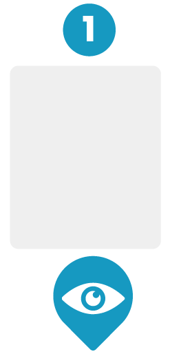
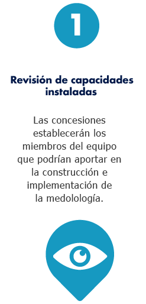

¡Preconstrucción y planificación!
Definir los perfiles profesionales y funciones del equipo que implementará la metodología, así como establecer el plan de trabajo
-

Objetivo - Tiempo - Recursos
-

Paso a paso
-

Herramientas
-


Revisión de capacades instaladas
Las concesiones establecerán los miembros del equipo que podrían aportar en la construcción e implementación de la medolología.
Definición de roles y funciones
Atendiendo a las capacidadfes del equipo, se establecerán los roles y funciones de cada uno de sus integrantes
Selección del equipo
Una vez identificados los posibles integrantes del equipo, se procederá a la revisión de hojas de vida y la realización de entrevistas.
Valoración de contratación adicional
Unidades instaladas en las conversiones, se evaluará la necesidad de controlar o no un profesional externo que apoye la implementación
- 


¡Bien hecho!
- 